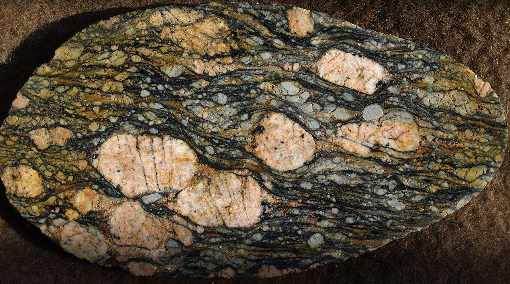
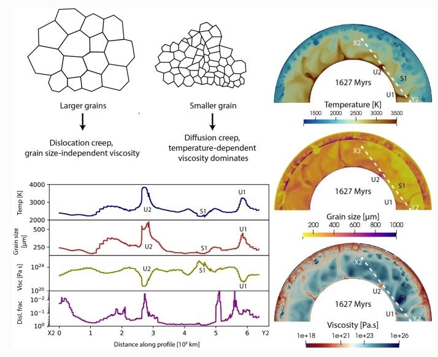
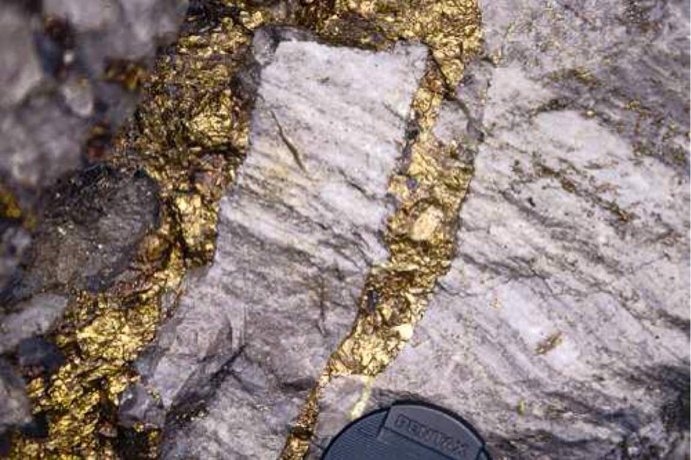
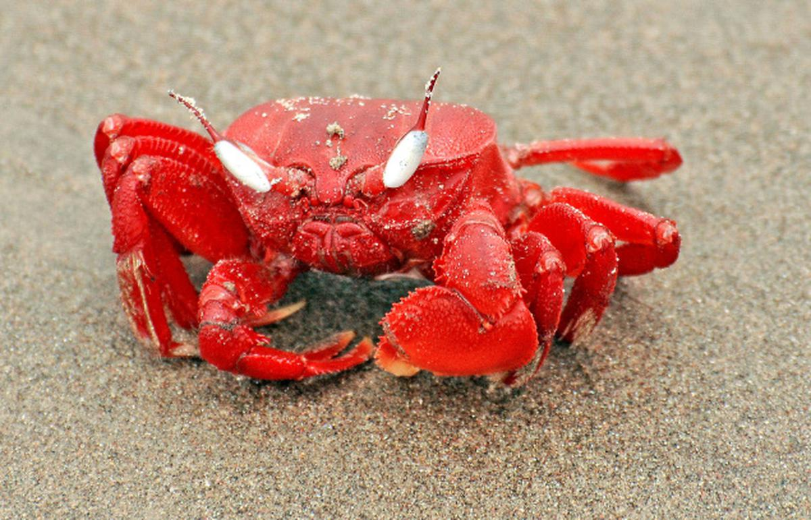

Research
Research collaborations
- Attreyee Ghosh, IISc Bangalore, India
- Clint Conrad, University of Oslo, Norway
- Arne Spang, University of Bayreuth, Germany
- Andrea Piccolo, University of Leeds, Leeds, UK
- Paul Tackley, ETH Zurich, Switzerland
- Gregor Golabek, University of Bayreuth, Germany
- Thorsten Becker, University of Texas, Austin, USA
- Tomo Katsura, University of Bayreuth, Germany
- Hongzhan Fei, Zhejiang University, Hangzhou, China
- Dipak C Pal, Jadavpur University, India
- Abu Saeed Baidya, University of St. Andrews, Scotland
- Subhronil Mondal, IISER Kolkata, India
Craton dynamics
Understanding the stability of cratons on a tectonically active planet like Earth remains one of the grand challenges in geodynamics. Through the development of numerical models of craton evolution, our research aims to shed light on why some cratons have remained stable for over 3 billion years, while others, like the North China Craton, have undergone complete destruction.
Key findings
Our findings suggest that the combination of viscosity and thickness plays a crucial role in enhancing cratonic strength, shielding them from tectonic recycling. Two key theoretical insights emerge:
- Stress and strain rates exhibit an inverse relationship at the lithosphere's base, reducing deformation beneath thick cratons.
- Cratonic thickness and viscosity induce convective self-compression, further reinforcing their resistance to disintegration.
Our research also indicates that cratons require a minimum viscosity of 10²³ Pa·s and that the surrounding asthenosphere must have a viscosity no lower than 10²⁰ Pa·s to sustain long-term stability.
Mechanisms of destruction
However, cratons can undergo thinning or destruction under certain conditions. Thermal weakening by mantle plumes (e.g., the Indian Craton) or hydration weakening from mantle/slab fluids (e.g., the North China Craton) can lead to their demise. My work explores these destruction mechanisms and compares their associated timescales.
Publications
-
Hydration weakening and destruction of the North China Craton
J. Paul, A. Spang, A. Piccolo (2025). Tectonophysics, 908, 230756.
-
Convective self-compression of cratons and the stabilization of old lithosphere
J. Paul*, C.P. Conrad, T.W. Becker, A. Ghosh (2023). Geophysical Research Letters, 50, e2022GL101842.
-
Could the Reunion plume have thinned the Indian craton?
J. Paul, A. Ghosh (2022). Geology.
-
Evolution of cratons through the ages: A time-dependent study
J. Paul, A. Ghosh (2020). Earth and Planetary Science Letters, 531, 115962.
-
Traction and strain-rate at the base of the lithosphere: An insight into cratonic survival
J. Paul*, A. Ghosh, C.P. Conrad (2019). Geophysical Journal International, 217(2), 1024-1033.
Grain size dependent rheology


Numerous speculations surround the impact of grain size on mantle dynamics, yet the lack of available data, whether experimental or natural, poses a substantial challenge in precisely determining this influence. Recent mineral physics experiments have, however, provided estimates for the grain growth rate of bridgmanite-ferropericlase, the primary mineral assemblage in the lower mantle. As part of the European Research Council project UltraLVP: Chemistry and transport properties of bridgmanite controlling lower-mantle dynamics, I incorporated bridgmanite-ferropericlase grain growth data into numerical models to investigate the effect of grain size in lower mantle viscosity.
The outcomes of the study revealed no significant impact of grain size on controlling lower mantle viscosity. This result can be attributed to the slow growth of bridgmanite-ferropericlase compared to upper mantle olivine grain growth, where small grain sizes have minimal influence on lower mantle viscosity. Conversely, if forced to increase like olivine, the growth of bridgmanite-ferropericlase grains leads to a dislocation creep-induced deformation, resulting in grain size-independent viscosity.
Publications
-
Effect of bridgmanite-ferropericlase grain size evolution on Earth's average mantle viscosity: Implications for mantle convection in early and present-day Earth
J. Paul*, G. J. Golabek, A. B. Rozel, P. J. Tackley, T. Katsura and H. Fei (2024). Progress in Earth and Planetary Sciences, 11 (64).
Layered ore complex

Layered structure of hydrothermal ore complex and Geostatistics
This work is part of a project investigating the style of hydrothermal mineralisation and ore formation in and around Delhi-Aravalli fold belt. I have worked on the geochemical and geostatistical analysis of amphibole originated from the hydrothermal processes. We detected three generations of amphiboles. The last stage of amphibole formation (A3) is probably associated with IOCG type mineralisation of this area.
Publications
-
Mode of occurrence and geochemistry of amphibole in the Kolihan-Chandmari copper deposits, Rajasthan, India: Insight into the ore-forming process
A.S. Baidya, J. Paul, D.C. Pal, and D. Upadhyay (2017). Ore Geology Reviews.
Crab ecology

Ecology of mangrove crab
Crabs near Chandipur sea beach show a strange behavior in their pattern of burrowing. Larger the burrow diameter, they become more horizontal. All these large burrows are found only in the backshore of the sea beach and they are oriented opposite to the sea. Geometrically they are more complex with "I", "J", and "Y" shaped burrow. We explain all these parameter as a result of crab energetics.
Publications
-
Burrow morphology of the ocypodid crab Ocypode ceratophthalma at Chandipur Coast, Eastern India and its implications
J. Paul, S. Mondal, R. Koyal, D. Sarkar (2019). Current Science.